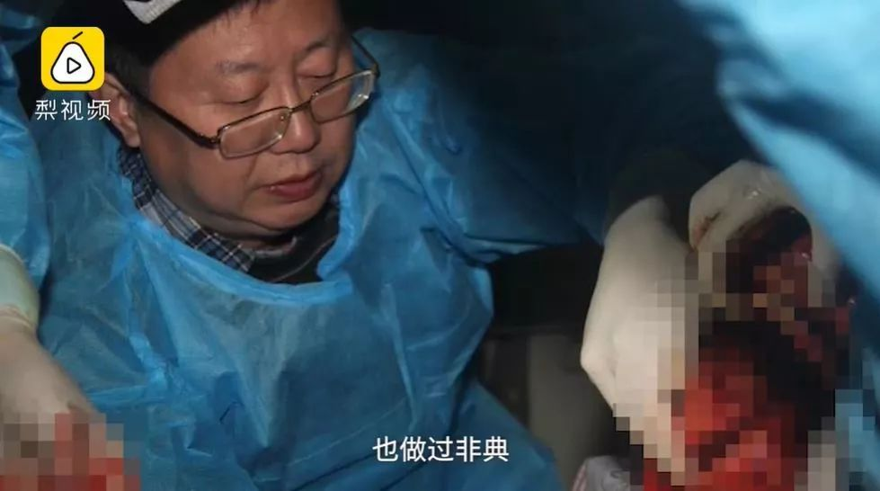
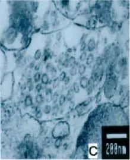
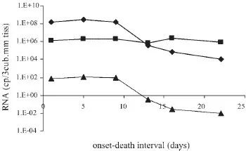

加拿大新冠患者之谜：出院两周为何仍称检出阳性？
原文链接 备份链接 【财新网】（实习记者 何京蔚 记者 黄蕙昭）北京时间2月14日，加拿大安大略省卫生厅召开新闻发布会，通报当地新型冠状病毒肺炎疫情。发言人芭芭拉·亚菲(Babara Yaffe)表示，多伦多市确诊的两例新冠肺炎患者，临 …
去年12月，新型冠状病毒肺炎疫情爆发后，我国科学家仅用一周的时间便将病毒鉴定了出来。之后，全球各大学术期刊相继发表相关临床病例研究结果，却至今未曾有任何与死亡病例相关的尸检结果披露。
近日，华中科技大学同济医学院法医学系的刘良教授，呼吁尽早对新冠肺炎死亡病例进行系统解剖，期望在病理学角度有所突破，以利于临床诊断和开发针对性治疗方案。[1]

刘良教授在采访中给出了目前尸检难题的解决方案，也提到曾做过SARS尸检｜梨视频
尽管可能受限于目前的解剖条件和伦理因素，我们暂时无法从尸检中得知更多新冠肺炎的信息。但目前的研究进展提示，从病毒来源上，导致本次疫情的病毒SARS-CoV-2与SARS-CoV是一对姐妹花，基因序列相似。
2003年SARS疫情爆发后，法医学家对部分死亡病例进行了尸体解剖。或许，我们可以从SARS的尸检结果中，找到些有借鉴价值的经验。
细胞因子风暴，
可能是SARS重症的重要因素之一
SARS的大名是严重急性呼吸道综合征，起病急促，3~7天即开始出现干咳、血丝痰等非特异的呼吸道症状，10~14天达到顶峰，除了发热、乏力等症状加重外，大多数病例出现气促、呼吸困难等为表现的急性呼吸窘迫综合征。
SARS患者的主要病理改变是肺部损伤，但其肺部损伤却不只是病毒直接侵袭而造成的，也就是说，还存在其他机制导致的“继发性损伤”。
一篇涉及香港6例SARS死者肺部解剖的论文，对继发性肺部损伤的机制做了推测。
解剖观察到的病理改变包括：
肺组织切片镜下可见弥漫性的肺泡损伤，伴有支气管上皮剥脱，纤毛脱落，鳞状上皮化生等病变；大部分死者肺泡和肺间质巨噬细胞浸润，肺泡上皮细胞增生形成双嗜性胞浆丰富的多核巨细胞，即巨细胞肺炎。大量的渗出以及白细胞的浸润，导致了肺部外观上明显膨隆、增大，重量增加[2]。

（左）SARS肺炎伴部分形成巨细胞的肺泡上皮细胞，肺泡内可见大量纤维素性渗出液，肺泡壁毛细血管淤血，肺泡壁完整性被破坏[3]；（右）正常肺泡和肺泡囊｜Color Images of Histological Sections
上述以呼吸系统为主的症状，就是病毒对肺部原发性以及继发性损伤导致的。[3]

肺部切片的电镜检查，在II型肺泡上皮细胞内质网分泌囊泡中，观察到90纳米大小的冠状病毒颗粒｜参考文献[4]
文章作者根据这些肺部病变推测，SARS患者肺部的吞噬现象提示，细胞因子的失调有可能是导致SARS患者临床症状严重的重要因素。[3]
细胞因子失调（现在常听到的说法是“细胞因子风暴”），是机体短期内分泌大量细胞因子，引起全身炎症反应综合征，甚至导致多器官功能障碍的一种过度免疫反应。而这些细胞因子可以诱导肺损伤-修复机制激活，最终导致肺纤维化，是患者最终呼吸困难、急性呼吸窘迫综合征的原因之一。[5]文章作者同时认为，临床上适当的糖皮质激素介入，可调节细胞因子失调，避免致命性的后果出现。[3]
直至现在，当年的SARS患者激素治疗方案仍然有很大的争议，而这个解剖结果，为此方案提供了一定的证据支持。
现行关于新冠肺炎治疗的激素介入，同样有一定的争议。如果可以通过解剖了解新冠病毒在组织细胞内的免疫应答情况，相信结果会对治疗有指导意义。
除了肺部，
SARS病毒还藏匿在胃肠道等处
另一篇涉及广东SARS和非SARS死者各4例的系统解剖论文发现，SARS死者除了肺部呈现SARS病毒阳性外，汗腺、肾脏、胃肠道等也存在SARS病毒阳性。文章作者认为，这个结果提示，SARS病毒除了经过呼吸道传播，也有可能会通过粪便、汗液和尿液传播。[4]
而后期也有临床研究表明，在SARS患者病发后数周时间内，粪便、尿液或咽拭子可检出病毒核酸，甚至提取到有感染活性的病毒。[6, 7]

SARS病毒阳性（红褐色）的小肠上皮（3A）和阴性对照（3D）；SARS病毒阳性的汗腺细胞（8A）和阴性对照（8D）｜参考文献[4]
当年如果早一步知道SARS病毒可侵犯胃肠道，类似香港淘大花园下水道SARS社区传播的案例可能就可以提前预防了。而这次的新型冠状病毒肺炎患者粪便中可检出新冠病毒核酸，提示着粪口传播的可能性，日前钟南山院士团队等也在患者粪便中进一步提取到了活性病毒。
如果可以进行深入的解剖检查，就能为病毒的传播途径提供实质性的证据。
死后90小时，小肠和肺组织中
仍可能存在活性SARS病毒
来自香港中文大学的一支研究团队，对11名病程不一致的SARS死者尸体进行系统解剖，通过检测不同器官的病毒核酸含量，分析了病毒在患者体内的分布。[8]其中用到的，就是这段时间的技术“明星”——实时定量PCR。
除了这项技术，文章还尝试从不同器官组织中提取病毒，以尝试了解患者死后病毒的活性情况。
可能有人会觉得奇怪，两者不都是检测病毒含量吗？结果出来有差吗？
这个差别可就大了。
从组织中提取病毒，得到的病毒是有活性的，是可以感染人的；而从组织中提取病毒核酸，则并不能说明组织中仍然存在具有感染性的病毒。就像从薛定谔的盒子里摸到活的猫会咬人，可是如果只摸到猫毛，只能说明盒子里有过猫，但并不能确定盒子里还有没有会咬人的猫。
所以，对于门把手可以提取到病毒核酸这样的信息，大家也无需过分恐慌。有可能这段核酸，已经是不具感染能力的病毒残骸了。
文中，作者尝试提取死后90小时以上尸体肺、心脏、肾脏、肝脏、脾、小肠、腰大肌以及骨髓的活性病毒，结果仅可以从部分死者小肠（4/6）和肺组织（4/11）内提取到仍然具有感染能力的活性病毒。最长可在死后175小时的患者肺以及死后160小时的患者小肠内，提取到活性病毒。

实验中部分尸检案例各器官活性病毒提取情况，死后175小时的患者肺以及死后160小时的患者小肠内，具传染性的活性病毒阳性。｜参考文献[8]
同时，研究者检测了上述脏器或组织的病毒核酸含量，发现小肠和肺每克组织的病毒核酸含量中位数是其他脏器或组织的60~17万倍。作者推测，患者死后，病毒虽然会随之逐渐死亡，但死前肺和小肠的病毒含量已经十分高，所以死后90小时病毒还没“全军覆没”。
参考这些数据，新冠病毒感染患者死亡后，殡葬工作人员的防护以及尸体的后续处理也显得十分重要。
同时，文章作者对比了病程不同的死者上述器官或组织的SARS病毒核酸含量变化，发现除了肺组织病毒核酸含量在发病后第12~13天开始有未知原因的明显下降外，其他的器官或组织病毒核酸含量比较平稳。
作者推测，有可能是利巴韦林和/或糖皮质激素治疗，对肺病毒抑制作用比较明显。也有学者认为，病毒核酸含量在肺部的下降，是体内免疫系统开始作用的后果。

肺SARS病毒核酸含量（♦）、持家基因（所有细胞中稳定表达的基因）核酸含量（方块）和SARS病毒相对含量（▲）的病程折线图，横坐标为病发-死亡经过的时长。每个数据点来自不同的患者，代表左右肺SARS病毒核酸含量的平均值。｜参考文献[8]
为什么需要对新冠肺炎死者
进行系统解剖？
从上述三篇SARS死者解剖相关文章，科学家们大致了解了SARS引致的人体各器官组织的病变，了解到SARS病毒在各器官中的偏向性，初步推测SARS可能导致细胞因子失调。
就像前文所说，如果早一步知道SARS病毒可在肠道中高浓度积聚，类似淘大花园下水道的社区传播可能就可以避免了。当然，这次新型冠状病毒肺炎，研究者在患者粪便中提取到了活性病毒，推测病毒可能可以通过粪口传播，这是在SARS抗击战中获得的经验。
这次的新型冠状病毒肺炎临床症状和SARS有不同点，不可能完全参照SARS的研究来推测发病机制、病理生理过程和传播途径。而且，哪怕现在有各种先进的分子病理技术，还是无法直观地了解病毒对人体的损伤情况。
当年如果没有这些为推进SARS研究而捐献遗体的死者和家属，SARS相关的研究也不会有现在这样的进展，衷心感谢这些捐献遗体的死者和家属。
现在，我们对新冠肺炎所知甚少，在疫情正酣、诊疗方案尚不完善的时期，相信如果可以对部分死者进行系统解剖，必定能有助于我们了解新型冠状病毒肺炎的病理生理进展和发病机制，也会对预防和治疗有所帮助。
参考文献
[1]国内法医界专家提议尽快对COVID-19死者进行解剖. 2020; Available from: https://www.pearvideo.com/video_1651485?st=1&from=timeline&isappinstalled=0.
[2] 呼吸系统疾病, in 病理学, 陈杰;李甘地, Editor. 2010, 人民卫生出版社: 北京.
[3] J M Nicholls, L L M Poon, K C Lee, et al., Lung pathology of fatal severe acute respiratory syndrome. The Lancet, 2003. 361(9371): p. 1773-1778.
[4] Y Ding, L He, Q Zhang, et al., Organ distribution of severe acute respiratory syndrome (SARS) associated coronavirus (SARS-CoV) in SARS patients: implications for pathogenesis and virus transmission pathways. J Pathol, 2004. 203(2): p. 622-30.
[5] 严冬, SARS发病机制研究进展. 国外医学：流行病学．传染病学分册, 2005. 32(1).
[6] P K C Cheng, D A Wong, L K L Tong, et al., Viral shedding patterns of coronavirus in patients with probable severe acute respiratory syndrome. The Lancet, 2004. 363(9422): p. 1699-1700.
[7] D Xu, Z Zhang, L Jin, et al., Persistent shedding of viable SARS-CoV in urine and stool of SARS patients during the convalescent phase. Eur J Clin Microbiol Infect Dis, 2005. 24(3): p. 165-71.
[8] J W Tang, K F To, A W Lo, et al., Quantitative temporal-spatial distribution of severe acute respiratory syndrome-associated coronavirus (SARS-CoV) in post-mortem tissues. J Med Virol, 2007. 79(9): p. 1245-53.
作者：喵奴·Catherine 江小鱼
编辑：odette

本文来自果壳，未经授权不得转载.
如有需要请联系sns@guokr.com

原文链接 备份链接 【财新网】（实习记者 何京蔚 记者 黄蕙昭）北京时间2月14日，加拿大安大略省卫生厅召开新闻发布会，通报当地新型冠状病毒肺炎疫情。发言人芭芭拉·亚菲(Babara Yaffe)表示，多伦多市确诊的两例新冠肺炎患者，临 …
原文链接 备份链接 澎湃新闻记者 张若婷 贺梨萍 新冠肺炎疫情暴发以来，各国科研团队对其飞沫、接触、气溶胶等传播途径高度关注， “能否感染结膜”也一度引发热议。当地时间2月11日，武汉大学人民医院陈长征研究组于预印本网站medRxiv（未 …
原文链接 备份链接 人类的发展史，就是疾病的增加史2月1日，武汉市汉口新华路上，在疑似新型冠状病毒感染者排队确诊的队伍旁，一名现场维持秩序的警察正在做防护准备。摄影/长江日报 金思柳 认识一下“新冠君”，人类疾病的新成员 *本刊记** …
原文链接 备份链接 **记者/魏晓涵 ** 编辑/石爱华 宋建华 *同济医学院法医学系教授刘良* 1月9日，新冠肺炎出现首个死亡病例，截至2月14日13时，因新冠肺炎所致的死亡人数已达1381人。 “目前，一例病理解剖都没有”，同济医学院 …
原文链接 备份链接 湖北省新冠肺炎疫情防控指挥部13日21时召开新闻发布会，邀请中央指导组医疗救治组专家、北京朝阳医院副院长童朝晖、广州支援武汉协和医院医疗队队长、广州医科大学附属第一医院副院长张挪富、武汉金银潭医院院长张定宇等介绍武汉 …